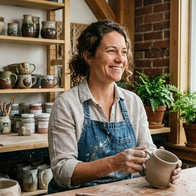

Theo Walsh throws functional pottery with a maker's eye for the everyday. Her mugs, bowls, and serving pieces draw on Pacific Northwest landscape and weather, with speckled stoneware bodies, soft glazes, and small narrative details that nod to the city she has come to call home.
Originally from Maine, Theo trained at the Penland School of Craft before moving west in 2019. She keeps a studio at the Multnomah Arts Center and sells through small craft shows, the Portland Saturday Market, and a handful of local restaurants who use her plates and serving ware. Her Portland-themed mug series has become a quiet favorite among locals and visitors looking for something rooted in place.
Theo is interested in the social life of objects: how a mug shapes a conversation, how a bowl invites a meal. She is currently developing a line of communal serving pieces for shared dining tables.